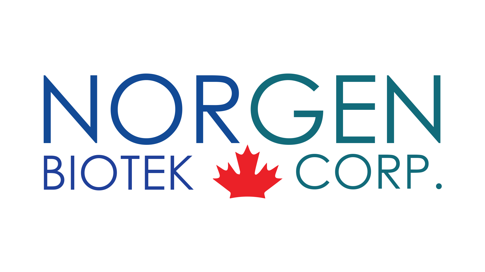

Abstract/Introduction
Welcome to my work-term report, detailing my experience at Norgen Biotek from early May to late August 2023. This report provides a comprehensive summary of my contributions, roles, and achievements during this period. Expect insights about Norgen Biotek as an employer, accompanied by images of the workplace. Further sections delve into my job description and learning objectives, ensuring a holistic understanding of my time at the company.
Information about the Employer
Norgen Biotek, established in 1998 by Dr. Yousef Haj-Ahmad, is nestled within Thorold, Ontario, just a stone's throw from Brock University. This biotech enterprise, spread across a 24,000 square-foot advanced facility, has garnered recognition in the form of ISO 9001, ISO 13485, and ISO 15189 certifications. Their expertise lies in sample collection, preparation, and detection, with a commitment to unparalleled quality.
With over thirty-five patents under their belt, Norgen's unique platform technology revolves around a proprietary resin/matrix. This innovation aids in purifying and concentrating DNA, RNA, microRNA, proteins, and exosomes across various sample types. Such advancements in purification are pivotal for diagnostics and numerous molecular biological applications, earning Norgen the esteemed "Innovation Leader Award for 2003" by the National Research Council.
Norgen’s prowess extends to developing and manufacturing a plethora of products, from isolation kits to sample collection devices. They champion the cause of quality and consistency, with all products adhering to the ISO 13485:2016 standard, ensuring cGMP compliance. Their commitment to quality is reflected not only in their products but also in their contract manufacturing services, tailored to individual requirements, ensuring timely deliveries and unmatched services.
While Norgen develops a lot of RNA sequencing kits as well as sample purification services, they recently opened and started a bioinformatics department. I worked in this "recently started" bioinformatics department, which comprised of five powerful linux machines that are heavily customized to suit the bioinformatics department's various computing needs. My work involved a lot of development operations work (especially whenever docker was concerned) as well various linux system administration responsibilities. I will delve deeper into the work that I completed while at Norgen Biotek later on in this report.
GOALS AND THEIR DETAILS
Learning Goal 1
To develop my ability to solve problems in the bioinformatics field that arise due to the interdisciplinary nature of bioinformatics.
Action Plan 1
- Continue working on creating reproducible, portable, and version-controlled Docker images for the various bioinformatics tools on my employer's bioinformatics machines.
- Continue working with different bioinformatics tools that are available and used on my employer's machines.
- Work with Bash, Python, and R scripts to make the bioinformatics tools in my bioinformatics pipelines easier to integrate and use.
Measure of Success 1
- By successfully creating the Docker images for the various bioinformatics pipelines, I will have completed the first step in my action plan.
- By using bioinformatics tools like 'exceRpt' and 'mothur' during my work-term, I would have completed the second step in my action plan.
- By modifying the Bash, Python, and R scripts to improve the usability and integration of my bioinformatics tools, I would have completed the third step in my action plan.
- By completing all of these three steps, then I will have achieved my learning goal of developing my ability to solve problems in the bioinformatics field.
Reflection 1
I have achieved my goal of developing my ability to solve problems in bioinformatics contexts by successfully developing the docker images for the 'exceRpt' and 'sRNAbench' pipelines.
By developing the 'sRNAbench' and 'exceRpt' docker images, I have been exposed to using a wide variety of bioinformatics tools (like 'STAR', 'bowtie', 'samtools', 'cutadapt', and 'sratoolkit') and have had to figure out how to integrate them together in my Docker images. This process allowed me to gain a deeper understanding of how the different bioinformatics tools work, which has improved my ability to think critically through the problems that can arise when using bioinformatics tools.
I did fairly well in developing and improving the bash and python scripts, but not so much on the R side of things. The bash scripts were improved and I learned a decent amount about bash scripting through doing so. While there were not many python scripts in 'exceRpt', there were a few in 'sRNAbench' that I worked with. I made some improvements, but ran into a few smaller and unexpected difficulties with the refactored python scripts that I did not get the time to figure out. The R scripts were challenging, but I was able to make them work in my Docker image.
Learning Goal 2
To develop my technical documentation reading skills and comprehension and to read up on bioinformatics peer-reviewed literature.
Action Plan 2
- To continue reading up on Docker and bioinformatics tools documentation.
- To continue researching peer-reviewed research on smallRNA analysis with an emphasis on cancer research and bioinformatics tools research.
Measure of Success 2
- By reading and following the documentation on Docker and the various bioinformatics tools that I am using, I will have completed the first step in achieving this learning goal.
- By conducting research-review and study throughout my work-term, I will have fulfilled the second step towards achieving this learning goal.
- By completing both of these steps, I will have achieved my goal of developing my technical documentation reading skills and my awareness and knowledge of bioinformatics literature.
Reflection 2
I have considerably developed my technical documentation literacy skills through successfully completing the two docker images. As mentioned before: there were many problems with integrating and using the different bioinformatics tools across the 'sRNAbench' and 'exceRpt' docker images, which were resolved through not just implementing fixes to the code of the docker images but also by consulting the documentation of docker and the bioinformatics tools. In-fact, some of the solutions that I came up with were inspired by the information found in the documentation that I was reviewing in-search of answers to my questions.
I have improved my knowledge of bioinformatics research literature through the research-review that I conducted on the topics, which were 'smallRNA' research that used the 'hg38' database as their reference genome database. However: I feel I could have done better here if I had asked more questions about terms and concepts that are native to biology and statistics, as doing so would have improved my understanding of the research that I was reading and collecting.
Learning Goal 3
To develop my ability to critically reflect on a problem statement, think my way through the potential solutions, and to adopt creative ways to approach problems that are useful.
Action Plan 3
By developing the Dockerscripts for the two pipelines that I have been assigned to work on, I must come up with solutions to most of the problems that I face. Coming up with solutions requires both, creativity and critical thinking, thus making it so that each problem is a great opportunity to practice my inquiry and analysis skills.
Measure of Success 3
If I finish my internship having finished all of my assigned Dockerscripts, then it would be safe to say that I have achieved my goal of developing my critical and creative thinking goals for this internship. As long as the Docker images that I build are portable, reproducible, version-controlled, and easy-to-use then it is safe to say that this learning goal has been achieved for this internship.
Reflection 3
I have been quite successful with the goal of developing my creativity in solving problems that come up with bioinformatics work. The reason I think this is: after completing the development of the 'exceRpt' and 'sRNABench2021' docker images, I can say that plenty of the solutions that I came up with (especially those with no obvious solution based on the documentation available) were quite creative and unorthodox. A lot of the problems that I came across were unique and interesting, so coming up with solutions that were not previously used was a task that I regularly engaged in.
The only thing that could have been improved (to the best of my knowledge) was the optimality of some of the creative solutions that I came up with. For example: I think the method that I came up with for version-controlling the R packages and for R itself could be improved to be more optimal without sacrificing the intended functionality. In computer science, such solutions are referred to as 'brute-force' solutions (which refer to solutions that solve the problems that they set out to solve, but are not as optimal as they can possibly be). Looking back and if I had a little more time, I would have thought of more optimal ways that my solutions would have used to become more efficient without impacting their intended functionality.
Learning Goal 4
To improve my ability to understand and work with niche technologies and tools, such as Docker, Bash scripting, using and navigating the Ubuntu operating system, and R programming.
Action Plan 4
- Continue working within the Ubuntu Linux development environment with Linux tools like Docker and bash.
- Work with niche bioinformatics tools and learn how to use them.
- Use older or less-used versions of bioinformatics tools to allow for strict version-control in my Docker images.
Measure of Success 4
- By continuing my work on the Ubuntu Linux development environment throughout the internship, I will have achieved the first step in my action plan.
- By working with niche bioinformatics tools outside of 'exceRpt' and 'mothur', I would have completed the second step in my action plan.
- Using older or less-popular versions of bioinformatics tools in my Docker image would allow me to complete the third step in my action plan.
- By completing all steps in my action plan, I would have successfully achieved my learning goal for this internship.
Reflection 4
I have achieved the goal of greatly improving my technological literacy in bioinformatics settings through the work that I did at Norgen. Many of the tools we use in the bioinformatics department were either new or a little unfamiliar to me prior to starting my work here. While I did have experience using Linux prior to starting my internship, I did not have this level of experience using Linux and Ubuntu (which is a desktop distribution of Linux). Having worked extensively with the Ubuntu machines in the bioinformatics department as well as having performed troubleshooting and problem-solving for the docker-related issues that we have had (such as the low disk space problem), I believe that my technological literacy has greatly improved.
Linux is not the only technology that I learned a great deal about during my internship; I have learned how various bioinformatics tools work and how to use them as well during my internship. I did so through modifying the docker-versions of the bash scripts that run the pipelines as well as installing and configuring these same tools in my docker images. Of course, I tested the tools in my docker images and verified that they were successfully integrated and configured by running them in the sequence that they were supposed to run (according to the original bash pipeline scripts) and comparing the output of our runs against reference or original output.
All in all, I was successful in achieving goal number four.
Learning Goal 5
To develop my professional communication abilities by being more open with my superiors and asking for help when stuck on difficult problems.
Action Plan 5
- When stuck on a problem for more than an hour, I must ask for help from my manager.
- When asking for help, it would be necessary to explain the steps that I tried to solve the problem and what approaches I have exhausted while attempting to solve said problem.
- To rinse and repeat the two steps every time there is a difficult problem that I cannot solve independently throughout the work-term.
Measure of Success 5
- By asking for help with a problem that I get stuck on for more than an hour, I will have achieved the first step towards achieving my learning goals.
- By being specific and open when asking for help, I will have completed the second step in achieving this learning goal.
- By completing both steps in a loop throughout the work-term, I will have successfully achieved this learning goal for this work- term.
Reflection 5
I believe that I did come really close to meeting or realizing this goal because I did improve my professional communication abilities from when I made my learning objectives till now. I did ask more questions about problems that I encountered when attempting to dockerize the pipelines that I was assigned to dockerize and discussed some of the problems (especially the more complex ones) with my supervisor.
Also, I did a decent job of explaining what I am stuck on and what potential solutions that I tried when asking for help. I would often go into detail about what the problem is, what I have tried to solve it, and what potential solutions that I am thinking of trying when asking for help rather than just asking for help without being specific about what I need help with. Again, I was not perfect here but I did well considering the level that I was at before writing and setting out my learning objectives.
I will say that I could have asked more questions and come to my supervisor a little more often than I did (I still did a decent amount of that), but I still made considerable progress in this regard.
Job Description

As an intern DevOps developer at Norgen Biotek's bioinformatics department, my primary responsibilities were as follows:
- Assist in the development and implementation of computational pipelines for the analysis of high-throughput sequencing data (RNA-Seq, ChIP-Seq, etc.).
- Work with biologists and other team members to collect and curate data for analysis.
- Perform quality control checks on raw data and analyzed results.
- Assist in the maintenance of databases and web interfaces for data visualization and analysis.
- Keep up-to-date with the latest developments in bioinformatics tools and techniques, and evaluate and implement new tools as needed.
- Design, build, and maintain Docker containers to ensure consistency in the software and tools used across different environments.
- Deploy and orchestrate containerized applications and pipelines using tools like Docker and bash.
- Administer, optimize, and monitor Linux workstations to ensure seamless operation of bioinformatics pipelines.
- Write and maintain bash scripts to automate various system tasks, from data backup to software installation.
- Collaborate with IT teams to ensure the security and integrity of high-throughput data.
- Diagnose and resolve system issues using system logs, monitoring tools, and best practices in Linux system administration.
While the list of responsibilities provides a detailed view of my role, what truly made this journey unique was the collaboration. Bridging the gap between biologists and developers was both a challenge and an enriching experience. The most intriguing part was leveraging technologies like Docker in a bioinformatics setting, ensuring consistency and efficiency in high-throughput data analysis.
Regarding the skills required for the job, Docker deployment, Linux system administration, and bash scripting were crucial. Some of these competencies were acquired during my academic journey at the University of Guelph, while others, especially the nuances of bioinformatics applications, were learned on the job. The ability to adapt and learn, driven by my passion for programming and game development, was instrumental in my accomplishments during this work-term.
Conclusions
Reflecting on my work-term at Norgen Biotek’s bioinformatics department, it’s evident how profound the experience was. Diving deep into the world of bioinformatics, I acquired a plethora of skills in both the computational analysis of high-throughput sequencing data and in DevOps. This journey was not just about tasks and responsibilities but about integrating within a dynamic team, fostering collaborations, and diving deep into bioinformatics computing needs.
The captivating facet of my role was the seamless blend of biology and technology. Beyond mere tasks, the role required me to be in sync with biologists, ensuring the data they provided was optimally processed and curated. Furthermore, my endeavors in deploying Docker containers and orchestrating applications showcased the importance of consistency across different tech environments.
If there's a single takeaway from this experience, it's the versatility and breadth of applications within computer science. From gaming to bioinformatics, the discipline's scope is staggering. This work-term was a testament to the importance of adaptability, continuous learning, and the interdisciplinary nature of modern industries.
Acknowledgments
I'd like to extend my heartfelt gratitude to my manager, Enaam Merchant. Her guidance, mentorship, and unwavering support were pivotal throughout my work-term. Navigating the complexities of bioinformatics computing was made more manageable with her insights, fostering an environment conducive to learning and growth. Her contributions to my professional journey at Norgen Biotek are truly invaluable.